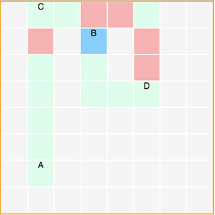

{{title}}
Need an entry-level software developer? Tyler is a scrappy, driven, and clever guy. Hire him today, and he'll catch the next flight to meet you in San Francisco.
How This Works
1. Pick Points
Click four grid segments to set coordinates for driver 1 (A), destination 1 (B), driver 2 (C), and destination 2 (D).
2. Get Data
The webapp determines if it's more efficient for Driver 1 to pick up and drop off Driver 2, or vice-versa.
3. Hire Tyler
He's got a lot of heart, and loves finding solutions. Imagine what this guy could do with a little mentoring! :)
Detour Calculator
{{this.grid[$index].point}}
{{ printout }}
A Few Notes
This code was written to solve the code challenge presented in the description for the New Grad Software Engineer opening. I was initally going to write a quick command line tool in Tcl or C to spit out some easy numbers, but I've been building up some front end skills lately, and I thought it may be a fun project to get a feel for AngularJS. I just wanted to make something cool and challenge myself.The wording of the challenge was a slightly ambiguous, and I'd normally ask for clarification to make sure I know what I'm doing. I mainly assumed I could use a uniform grid of an arbitrary size instead of a proper map (which is kind of a big thing to guess on), but that seemed most appropriate, scaled for the job description.
Currently, the app determines if it's more efficient for Driver A to take Driver C to point D while en route to B, or for C to take A to B en route to D. If the detour length would be equal, the app checks to see if one route is more efficient than the other. If not, the driver is simply assigned randomly. As an added touch, the "trail" is green when the current path is on the way to the driver's end destination, and red if the driver is diverging from his initial path. In a later version, a few more conditional statements could be added to mark the entire detour as red. I would also change the call to action functions (how many of you guys are actually using your default mail client at work?).
I'm familiar writing model/controller code in VHDL for FPGA modules, and I wish I could have decluttered MainController.js more by moving most of the functions to grid.js, but I wasn't sure how I could access $scope otherwise (that would be a question for one of the senior guys). I also didn't add many media query breakpoints, though I'd normally code mobile first, and I'd typically use SASS to organize the CSS. For this project, that seemed excessive.
I thought about using Bootstrap, but decided ultimately to write the HTML and CSS outright instead of using a framework, especially since I planned on using flexbox instead of a grid system. To build this project, I used HTML, CSS, jQuery, AngularJS, Adobe Illustrator, Adobe Photoshop, some photography and design skills, several scraps of notebook paper, and three differently colored pens.
I'm really excited about the idea of working as a new software developer for Lyft. If you guys are willing to hire me, I'll be on the next plane to San Francisco.